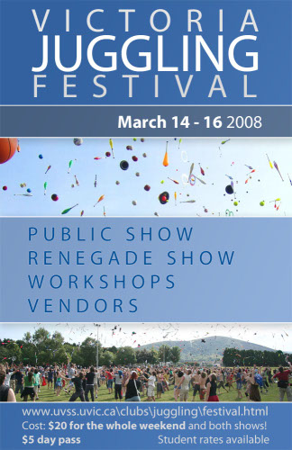

|
 |
Welcome to the Victoria Juggling Festival Website! When:March 14-16, 2008 Where:University of Victoria, Victoria, BC Canada Trailer:
Vendors:These vendors have promised to show up to sell goods:
Vancouver Circus School: clubs, balls, stage balls |